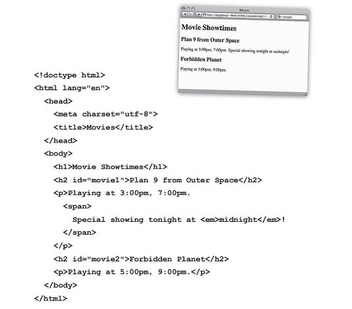
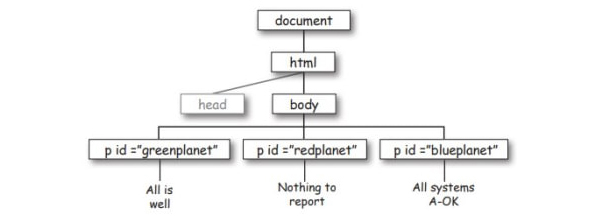
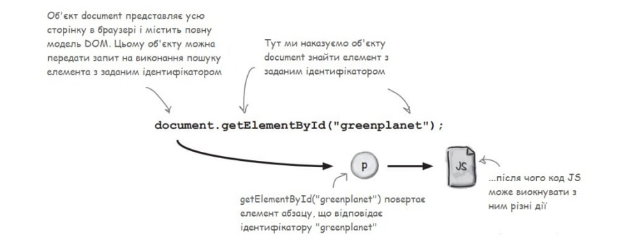
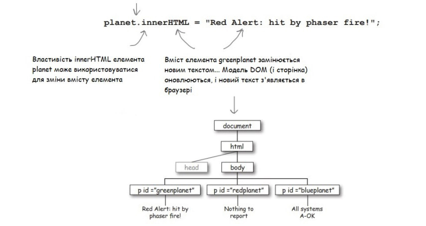
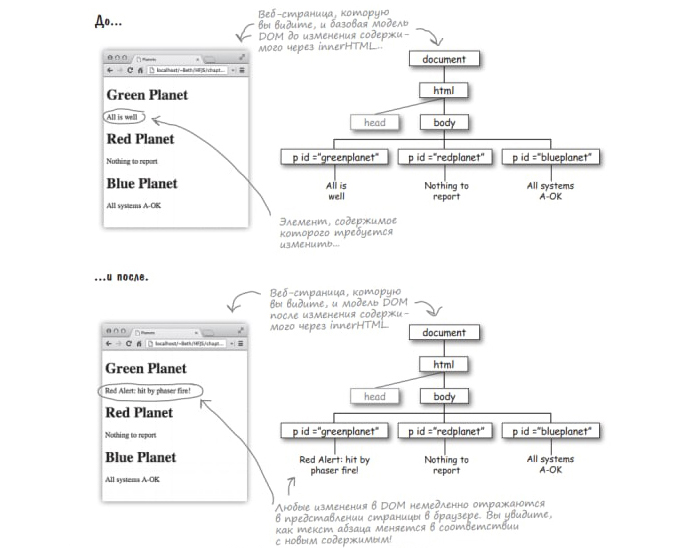
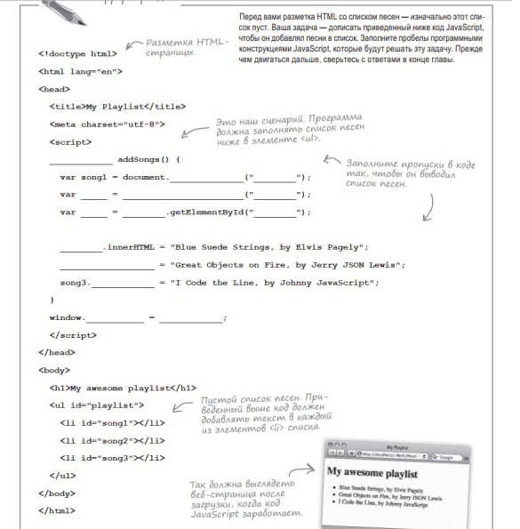
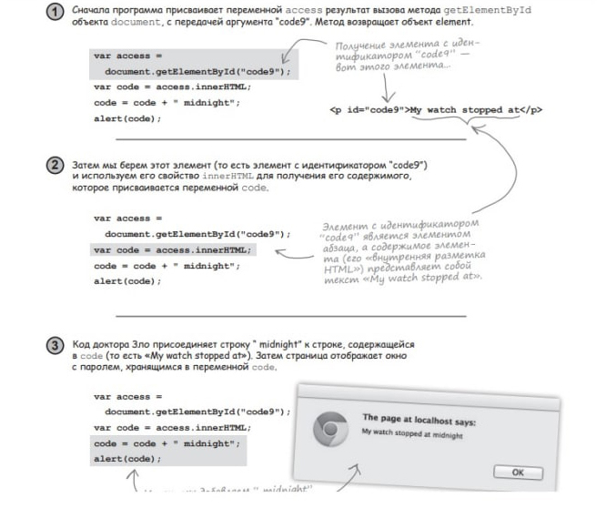
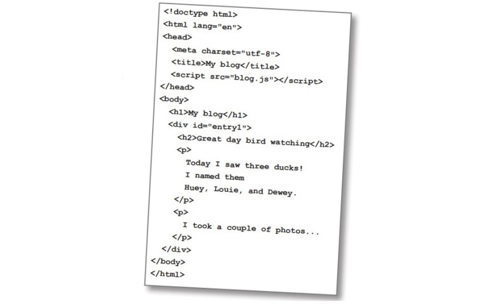

Головна > Тема 11
Властивість innerHTML
document.getElementById("code9");access.innerHTML; // об’єкт з властивістю innerHTMLТобто на малюнку код JS звернувся до сторінки(документа), отрима елемент(з іден-м "code9"), взяв вміст цього елемента(рядок "My…at"), додав до нього рядок "midnight" і вивів результат на екран:
Веб-сторінка являє собою живу, рухливу структуру даних, з якою може взаємодіяти код JS. Можна звертатися до елементів сторінки і читати їх вміст, або ж JS можна використовувати для зміни структури сторінки.
Взаємодія JS зі сторінкою
HTML – розмітка, JS – код. Їх взаємодія відбувається через уявлення сторінки, що називається об’єктною моделлю документа (DOM). Модель DOM створюється під час завантаження сторінки браузером.
Як це відбувається на малюнку:
  Розглянемо малюнок:
Потрібно замінити текст з id greenplanet на "Red Alert: hit by phaser fire!". Для цього знадобиться елемент з id "greenplanet":
document.getElementById("greenplanet");Отримавши елемент від getElementById ми можемо виконати з ним певну операцію:
var planet = document.getElementById("planet");
planet.innerHTML = "Red Alert:hit by phaser fire!";Виконайте завдання:
Запитуючи елемент з DOM методом getElementById, ми отримуємо об’єкт element, який може використовуватися для читання зміни або заміни вмісту або атрибутів елемента.
Ми можемо виконати зі своїм елементом (елемент <p>) заміну вмісту "All is well" на "Red alert:hit by phaser fire!". Об’єкт element присвоєний змінній planet; скористаємося цією змінною для зміни однієї з властивостей, а саме innerHTML:
Var planet=document.getElementById("greenplanet"); Planet.innerHTML="Red Alert: ...";Властивість innerHTML використовується для зміни вмісту елементу. В innerHTML повертається вміст елемента, без тегів елемента HTML.
Завдання: вивести на консоль вміст об’єкта planet, використовуючи властивість innerHTML.
Щоб змінити вміст елемента, ми надаємо його властивості innerHTML рядок "Red alert: …".
Завдання: виконати зміну.
Коли ми виконуємо ці дії, фактично ми змінюємо вміст веб-сторінки «на ходу»:
- Якщо шукаємо елемент з не існуючим ідентифікатором, то виклик getElementById поверне значення null.
- Шукати за классом: getElementByClassName із заданим ім’ям тега getElemenstByTagName.
- В процесі завантаження і розбору файла HTML , браузер створює об’єкт element для кожного елемента сторінки і дає всі ці об’єкти в модель DOM. Таким чином модель DOM являє собою дерево об’єктів element.
- Властивість innerHTML дає весь зміст елемента, включаючи вкладені елементи(наприклад <em>,<img>).
- Задаючи щось innerHTML можна замінити вміст елемента, включаючи елемент <body>.
Коли ми працюємо з DOM, дуже важливо виконувати код після повного завантаження сторінки (а ми шукаємо елемент, який ще не існує):
Вирішення проблеми:
- Перемістити скрипт в кінець розділу <body>.
- Наказати браузеру виконувати код скрипта, тільки після повного завантаження сторінки і побудови моделі DOM.
Спочатку створюється функція з кодом, що має виконуватися після завантаження сторінки. Ця функція присвоюється властивості onload об’єкта window. Об’єкт window викличе фукцію, пов’язану з властивістю onload, але після того як сторінка повністю завантажиться.
<script>
function init() {
var planet = document.getElementById("...");
planet.innerHTML = "...";
}
window.onload = init;
</script>
Припустимо, що має трапитися якась важлива подія і нам необхідно про неї дізнатися (наприклад «сторінка повністю завантажена»). В таких випадках застосовується функції оберненого виклику, які ще називають обробниками подій. Робота таких функцій грунтується на тому, що ми передаємо ці функції об’єктам, які знають подію. Коли виникає подія об’єкт викликає отриману функцію, тобто оповіщює нас про настання події. Можна писати опрацювавши події для виклику функції кожні 5 секунд, або коли користувач натиснув на кнопку і тд.